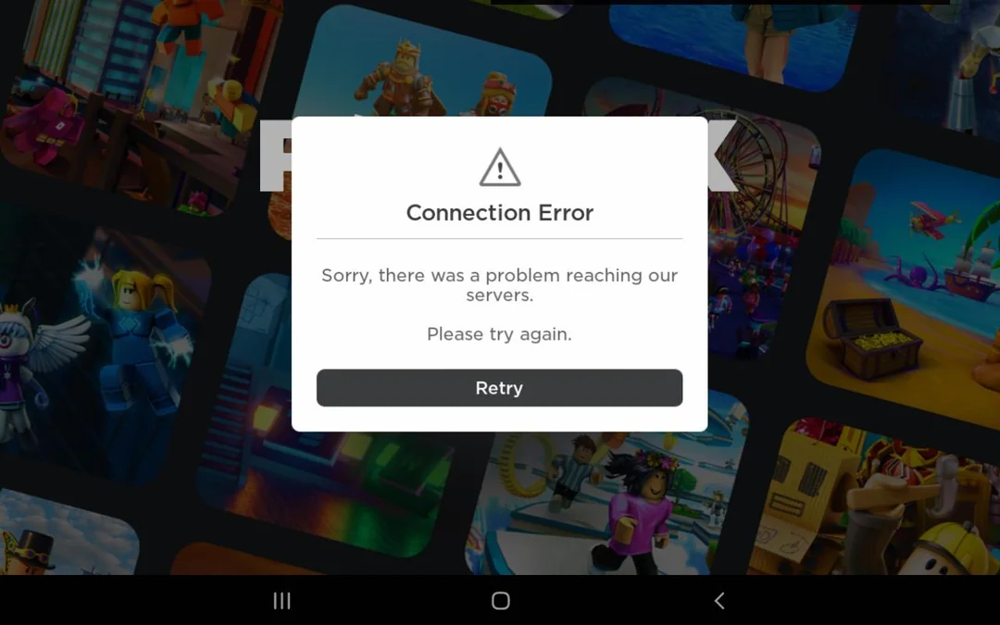
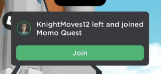
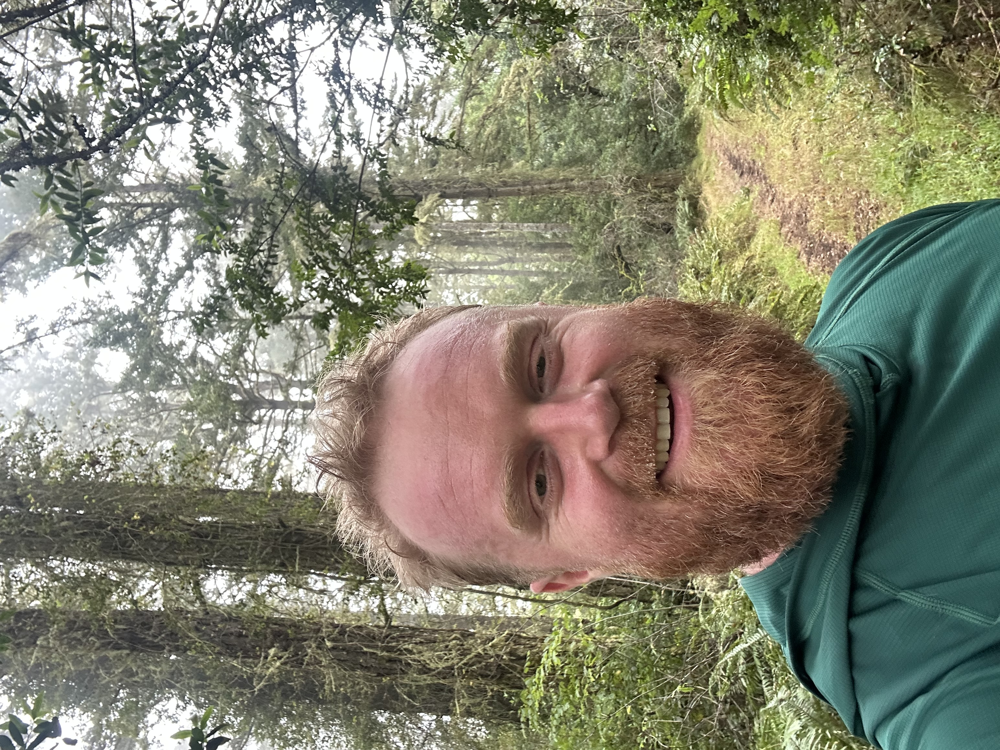

- ericwimsatt@gmail.com
- github.com/Ericwimsatt
- (760) 402-5406
- San Francisco, CA


Hi! I’m Eric. I was a software engineer on the App and Growth teams at Roblox — I joined when there were about 800 people and left when there were 2500. I'm looking for an opportunity to join a smaller team where I can more directly impact the product.
I loved being at Roblox. I got to learn from and work with the smartest people I've ever met. It was awesome to work on something that so many users loved.
I left because I wanted to join or start a startup, but those plans were delayed when I crashed my car :<. I'm all recovered now! I've been traveling and enjoying some rest. I used the downtime to work on other projects I've wanted to tackle forever, AI agents to support vibecoders, IRL games, and some math projects.
I like working close to users, shipping fast, and feeling like my work has a real impact on people.
In my free time I like to travel, swim, and check out art museums

University of California, Berkeley
Class of 2021
Research
Gene Sequencing — Explored more performant DNA sequencing to enable bulk analysis. Worked on a memory-efficient bloom filter implementation.
PublicEditor — Studied misinformation and created a tool to identify and label it. Designed an annotator-consensus framework that is still used in academic research.
Fun Stuff
D1 Triathlete · Mentor at Local Middle School · Event Organizer